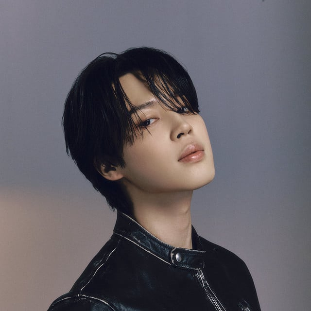

Jimin
Born: 13 October 1995
Age:
Years Active: 2013–present
Genre/s: K-pop, alternative R&B
Label/s: Big Hit
Member of: BTS
Park Ji-min (Korean: 박지민; born October 13, 1995), known mononymously as Jimin, is a South Korean singer, songwriter, and dancer. In 2013, he made his debut as a member of the South Korean boy band BTS, under the record label Big Hit Entertainment. Jimin has released three solo tracks under BTS' name—"Lie" in 2016, "Serendipity" in 2017, and "Filter" in 2020—all of which have charted on South Korea's Gaon Digital Chart.
He released his first credited solo song, the digital track "Promise", which he co-wrote, in 2018 and recorded the duet "With You" with Ha Sung-woon for the soundtrack for the TvN drama Our Blues in 2022. Jimin released his debut solo album, Face in 2023, which debuted at number one in South Korea and Japan and number two on the US Billboard 200, making him the highest-charting Korean solo artist on the latter chart. The album's single "Like Crazy" became the first song by a Korean solo artist to debut at number one on the US Billboard Hot 100 in history. Jimin also became the first Korean solo artist to top the Billboard Artist 100 chart. In 2024, he released his second album, Muse, and its lead single "Who", which debuted at number one on the Billboard Global 200.